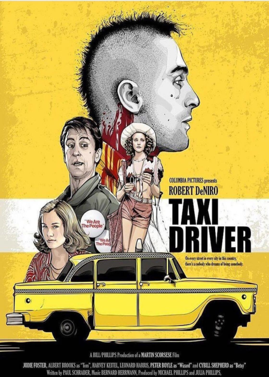
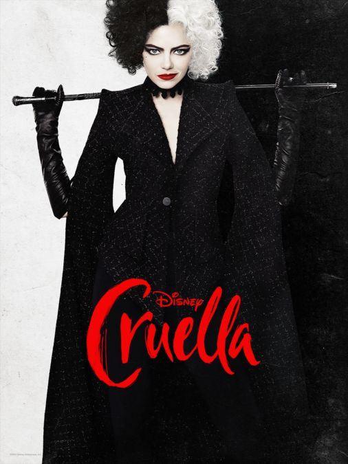

Filmes
Taxi Driver
Sinopse:
O motorista de táxi de Nova York Travis Bickle, veterano da Guerra do Vietnã, reflete constantemente sobre a corrupção da vida ao seu redor e sente-se cada vez mais perturbado com a própria solidão e alienação. Apesar de não conseguir fazer contato emocional com ninguém e viver uma vida questionável em busca de diversão, ele se torna obcecado em ajudar uma prostituta de 12 anos que entra em seu táxi para fugir de um cafetão.

Clique para mais informações.
Cruella
Sinopse:
Inteligente, criativa e determinada, Estella quer fazer um nome para si através de seus designs e acaba chamando a atenção da Baronesa Von Hellman. Entretanto, o relacionamento delas desencadeia um curso de eventos e revelações que fazem com que Estella abrace seu lado rebelde e se torne a Cruella, uma pessoa má, elegante e voltada para a vingança.

Clique para mais informações.
A Forma da Água
Sinopse:
Década de 60. Em meio aos grandes conflitos políticos e transformações sociais dos Estados Unidos da Guerra Fria, a muda Elisa, zeladora em um laboratório experimental secreto do governo, se encanta com uma criatura fantástica mantida presa e maltratada no local. Para executar um arriscado e apaixonado resgate, ela recorre ao melhor amigo Giles e à colega de turno Zelda, em uma aventura que pode custar muito mais do que o seu emprego.
 Clique para mais informações.
Clique para mais informações.